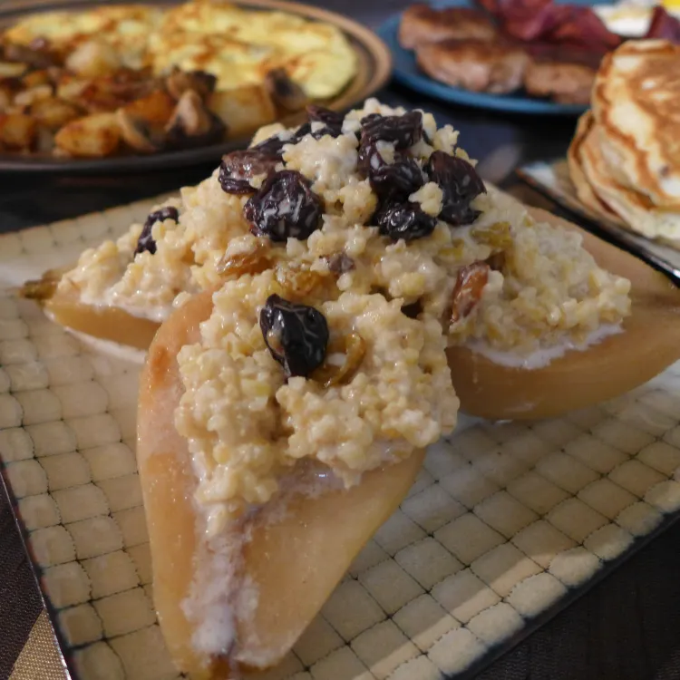

Back to Home

While there’s nothing wrong with some cold chicken and pickles for a quick bite on a busy
morning, if you want to impress visiting wizards, warm your belly with this historic morning porridge stuffed into creamy poached pears.
If you find yourself entertaining unexpected guests, this rustic, seasonal breakfast is a quick, easy way to
make a simple breakfast of leftovers seem fit for a brunch with the king of the dwarves.
4 large firm pears
2 c / 470 ml apple cider, pear cider, or white wine
¼ c / 50 g sugar
1 tsp cinnamon
2 c / 450 g oat porridge or furmenty
1 c / 220 g Stewed Apples and Prunes or Roasted Apples, chopped
4 tbsp heavy cream
- Pour the cider or wine in a wide stewpot. Add the sugar and cinnamon and bring it to a boil over medium-high
heat.
- While you’re waiting for the booze to boil, peel the pears. Cut them in half lengthwise and scoop out the
seeds and a little interior flesh. These are about to become edible bowls, so get rid of anything you don’t
want to eat while still keeping the pear’s shape.
- Add the pears cut side down to the pot of bubbling booze. Put a lid on it and turn the heat down to medium
low. Let the pears gently simmer for about 10-12 minutes. Open the pot, carefully flip the pears over, then
put the lid back on and continue simmering for another 10-12 minutes, or until the pears are tender but not
mushy.
- While the pears are simmering away, splash a little milk in yesterday’s porridge or furmenty to loosen it
up. Once it reaches the right consistency, warm it through. You can use another pot, or if you don’t mind
modern magic, just toss it in the microwave for a minute or two. Do the same thing with some leftover baked
apples from last night’s dessert or stewed apples and prunes from yesterday’s breakfast.
- Use a slotted spoon to carefully lift the pears onto a serving platter. Remember, from this point on, your
main goal is presentation. Arrange the pear halves cut-side up on a platter. Spoon the furmenty or porridge
in the middle. Make a little well and top that with some apples or dried fruit. Finish them off by
splashing a tbsp of heavy cream over each assembled pear half.
- Make sure everyone else finishes their first cup of coffee or tea while your pears cook. You want them to be
awake and properly impressed when you bring this to the table.